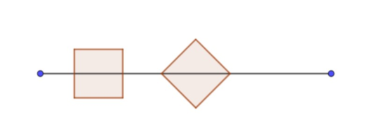

Project Euler 644
Project Euler 644
题目
Squares on the line
Sam and Tom are trying a game of (partially) covering a given line segment of length \(L\) by taking turns in placing unit squares onto the line segment.
As illustrated below, the squares may be positioned in two different ways, either “straight” by placing the midpoints of two opposite sides on the line segment, or “diagonal” by placing two opposite corners on the line segment. Newly placed squares may touch other squares, but are not allowed to overlap any other square laid down before.
The player who is able to place the last unit square onto the line segment wins.

With Sam starting each game by placing the first square, they quickly realise that Sam can easily win every time by placing the first square in the middle of the line segment, making the game boring.
Therefore they decide to randomise Sam’s first move, by first tossing a fair coin to determine whether the square will be placed straight or diagonal onto the line segment and then choosing the actual position on the line segment randomly with all possible positions being equally likely. Sam’s gain of the game is defined to be \(0\) if he loses the game and \(L\) if he wins. Assuming optimal play of both players after Sam’s initial move, you can see that Sam’s expected gain, called \(e(L)\), is only dependent on the length of the line segment.
For example, if \(L=2\), Sam will win with a probability of \(1\), so \(e(2)= 2\).
Choosing \(L=4\), the winning probability will be \(0.33333333\) for the straight case and \(0.22654092\) for the diagonal case, leading to \(e(4)=1.11974851\) (rounded to \(8\) digits after the decimal point each).
Being interested in the optimal value of \(L\) for Sam, let’s define \(f(a,b)\) to be the maximum of \(e(L)\) for some \(L \in [a,b]\).
You are given \(f(2,10)=2.61969775\), being reached for \(L= 7.82842712\), and \(f(10,20)=5.99374121\) (rounded to \(8\) digits each).
Find \(f(200,500)\), rounded to \(8\) digits after the decimal point.
解决方案
令\(U=200,V=500.\)可见，这时一个标准无偏组合游戏。可以考虑使用SG定理解决此问题。
若当前剩余可用线段是一段长度为 \(L\) 的连续区间。选择一种摆放方式，其在线段方向的占用长度为\(s\in\{1,\sqrt2\}.\)只要 \(L\ge s\)，就能把这枚正方形放在某个位置，使得它在线段上占据一段长度 \(s\)。设该占据段左端点距线段左端为 \(x\)，则 \(x\in[0,L-s]\)，落子后剩余线段被分裂成两段，长度分别为\(x, L-s-x.\)由于之后所有落子都只能发生在剩余线段上，且两段互不干扰，因此局面等价为两个独立子游戏的disjunctive sum。
这是典型的无偏taking-and-breaking模型。也就是说，每步选择 \(s\in\{1,\sqrt2\}\)，从一段长度 \(L\) 的堆里取走 \(s\)，并把剩余 \(L-s\) 分裂为两堆 \(x\) 与 \(L-s-x\)。
对任意长度 \(L\ge 0\)，定义 Grundy 数 \(g(L)\) 为该长度单堆游戏的 SG 值。这里用符号 \(\boxplus\) 表示无偏disjunctive sum，满足\(g(L_1\boxplus L_2)=g(L_1)\oplus g(L_2),\)其中 \(\oplus\) 为按位异或。
当 \(L<1\) 时，连横放都放不下，故无路可走：\(g(L)=0, 0\le L<1.\)当 \(L\ge 1\) 时，所有一步后可达的 SG 值集合为
\[ \mathcal S(L)= \{g(x)\oplus g(L-1-x):0\le x\le L-1\} \cup \{g(x)\oplus g(L-\sqrt2-x):0\le x\le L-\sqrt2\}. \]
于是\(g(L)=\operatorname{mex}\big(\mathcal S(L)\big).\)
Sam 第一手选定 \(s\in\{1,\sqrt2\}\)（各 \(1/2\)），并在 \(x\in[0,L-s]\) 上均匀随机落子。落子后轮到 Tom 行动，局面为两堆disjunctive sum：\(x\boxplus L-s-x.\)在无偏博弈中，轮到当前玩家时 SG=0 的局面是必败局面。因此 Sam（刚走完第一步）想赢，必须让 Tom 面对必败局面，即\(g(x)\oplus g(L-s-x)=0\Longleftrightarrow g(x)=g(L-s-x).\)
定义在给定 \(L,s\) 下的必赢位置总长度\(W_s(L)=\operatorname{meas}\{x\in[0,L-s]:g(x)=g(L-s-x)\},\)其中\(\operatorname{meas}\)表示测度，在这里它是实数轴上的一段子集，所以它就是这个集合的长度。则该摆放方式下 Sam 赢的概率为\(P_s(L)=\dfrac{W_s(L)}{L-s}.\)总体赢率\(P(L)=\dfrac12(P_1(L)+P_{\sqrt2}(L)).\)因此期望收益
\[ e(L)=L\cdot P(L) =\frac{L}{2}\left(\frac{W_1(L)}{L-1}+\frac{W_{\sqrt2}(L)}{L-\sqrt2}\right). \]
问题变成：在 \(L\in[U,V]\) 上最大化上式。
直观上，\(g(\cdot)\) 只会在某些特殊长度发生变化：因为它是由大量区间上常值的 \(g(x)\) 与 \(g(L-s-x)\) 组合后取 mex 得到的。因此，若把 \(g(L)\) 视为 \(L\) 的函数，它是分段常数的；每个分段端点都可以写成\(a+b\sqrt2, a,b\in\mathbb Z_{\ge 0}.\)
证明思路（构造性归纳）如下：初始已知边界：\(0\) 与 \(1\)；假设到某个长度之前，所有已出现的边界都属于集合 \({a+b\sqrt2}\)；当我们考虑更大的 \(L\) 时，\(\mathcal S(L)\) 里的元素来自于区间组合：取某个已知常值区间 \([u,u')\) 与另一个 \([v,v')\)，在摆放方式 \(s\) 下，会影响到的 \(L\) 范围是\(L\in [u+v+s,u'+v'+s),\)因为需要存在 \(x\in[u,u')\) 且 \(L-s-x\in[v,v')\)，等价于 \(L\in x+s+[v,v')\) 的并集。因而所有可能触发集合 \(\mathcal S(L)\) 变化的点只能出现在\(u+v+s, u'+v'+s\)这样的和式上；而这些仍属于 \(\mathbb Z[\sqrt2]\)。
同理，\(W_s(L)\) 作为“若干重叠长度之和”，其变化也只发生在同类的和式端点上，因此也只需要在 \(\mathbb Z[\sqrt2]\) 的有限个点上进行事件更新。
在本题范围 \(L\le V\) 内，\({a+b\sqrt2\le V}\) 的数量级不大，完全可枚举并按大小排序做扫描线。把所有 \(a+b\sqrt2\le R\)（本题 \(R=500\)）按数值升序列出，作为扫描线关键点序列 \({L_k}\)。
可以把某个 nimber \(t\) 是否出现在 \(\mathcal S(L)\) 中理解为：存在多少对常值段在当前 \(L\) 下能够形成异或结果 \(t\)。当 \(L\) 穿过某些边界时，这些可形成 \(t\) 的对数才会发生增减。于是我们把这些增减记录成一系列事件：在某个 \(L\) 点开始出现，在另一个 \(L\) 点消失。扫描所有关键长度并维护各 nimber 的出现次数，就能实时得到 mex，从而得到 \(g(L)\)。
在扫描 \(L\) 的过程中，满足 \(g(x)=g(L-s-x)\) 的条件同样来自于两边落入某对固定的 SG 常值段。对固定的一对常值段来说，满足条件的 \(x\) 形成一个区间（或空集），而这个区间的端点会随 \(L\) 以一次函数方式平移。因此，来自这一对常值段的贡献长度随 \(L\) 呈线性变化；把所有贡献相加，\(W_s(L)\) 在相邻关键长度之间也是线性的。
于是对每个 \(s\in\{1,\sqrt2\}\)，在任意两个相邻关键长度 \(L_0<L<L_1\) 内，都存在常数 \(a_s,b_s\) 使得\(W_s(L)=a_s+b_s(L-L_0).\)当 \(L\) 穿过某个关键长度时，只有少量“区间对”开始或结束贡献，从而 \(b_s\)（线性系数）发生跳变；这正对应于前面说的事件更新。
这样，在扫描过程中就能持续得到 \(W_1(L)\) 与 \(W_{\sqrt2}(L)\)，从而随时计算\(e(L)=\frac{L}{2}\left(\frac{W_1(L)}{L-1}+\frac{W_{\sqrt2}(L)}{L-\sqrt2}\right),\)并维护区间 \([U,V]\) 内的最大值。
代码
1 | import math |